Figure fig_ch01_p027_01 (Page 27) Figure fig_ch01_p027_02 (Page 27) Figure fig_ch01_p027_03 (Page 27) Figure fig_ch01_p027_04 (Page 27) Figure fig_ch01_p027_05 (Page 27) Figure fig_ch01_p027_06 (Page 27) Figure fig_ch01_p027_07 (Page 27) Figure fig_ch01_p027_08 (Page 27) Figure fig_ch01_p027_09 (Page 27) Figure fig_ch01_p027_10 (Page 27) Figure fig_ch01_p027_11 (Page 27) 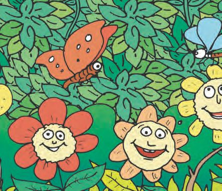
Figure fig_ch01_p027_12 (Page 27) Figure fig_ch01_p027_13 (Page 27) Figure fig_ch01_p027_14 (Page 27) Figure fig_ch01_p027_15 (Page 27) Figure fig_ch01_p027_16 (Page 27) Figure fig_ch01_p027_17 (Page 27) Figure fig_ch01_p027_18 (Page 27) Figure fig_ch01_p027_19 (Page 27) Figure fig_ch01_p027_20 (Page 27) Figure fig_ch01_p027_21 (Page 27) Figure fig_ch01_p027_22 (Page 27) Figure fig_ch01_p027_23 (Page 27) Figure fig_ch01_p027_24 (Page 27) Figure fig_ch01_p027_25 (Page 27) Figure fig_ch01_p027_26 (Page 27) Figure fig_ch01_p027_27 (Page 27) Figure fig_ch01_p027_28 (Page 27) Figure fig_ch01_p027_29 (Page 27) Figure fig_ch01_p027_30 (Page 27) Figure fig_ch01_p027_31 (Page 27) Figure fig_ch01_p027_32 (Page 27) Figure fig_ch01_p027_33 (Page 27) Figure fig_ch01_p027_34 (Page 27) Figure fig_ch01_p027_35 (Page 27) Figure fig_ch01_p027_36 (Page 27) Figure fig_ch01_p027_37 (Page 27) Figure fig_ch01_p027_38 (Page 27) Figure fig_ch01_p027_39 (Page 27)
2
Walk... Walk... and
Walk...
How beautiful!
Let‛s go for
a walk, Kittu.
Okay
Minnu!
What all things do we see in the picture?
How many
How many
butterflies?
flowers?
Three of the flowers seem happier.
Can you guess why?
27
Figure fig_ch01_p028_01 (Page 28) Figure fig_ch01_p028_02 (Page 28) Figure fig_ch01_p028_03 (Page 28) Figure fig_ch01_p028_04 (Page 28) Figure fig_ch01_p028_05 (Page 28) Figure fig_ch01_p028_06 (Page 28) Figure fig_ch01_p028_07 (Page 28) Figure fig_ch01_p028_08 (Page 28) Figure fig_ch01_p028_09 (Page 28) 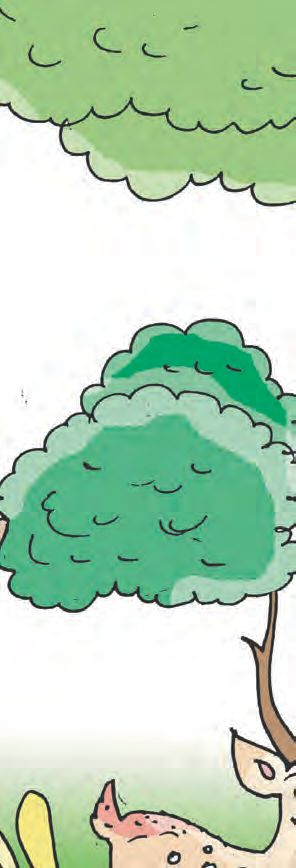
Figure fig_ch01_p028_10 (Page 28) Figure fig_ch01_p028_11 (Page 28) Figure fig_ch01_p028_12 (Page 28) 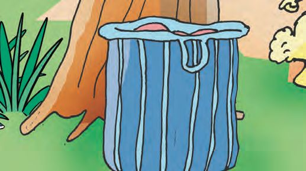
Figure fig_ch01_p028_13 (Page 28) Figure fig_ch01_p028_14 (Page 28) Figure fig_ch01_p028_15 (Page 28) Figure fig_ch01_p028_16 (Page 28) Figure fig_ch01_p028_17 (Page 28) Figure fig_ch01_p028_18 (Page 28) Figure fig_ch01_p028_19 (Page 28) 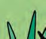
Figure fig_ch01_p028_20 (Page 28) Figure fig_ch01_p028_21 (Page 28) Figure fig_ch01_p028_22 (Page 28) Figure fig_ch01_p028_23 (Page 28) Figure fig_ch01_p028_24 (Page 28) Figure fig_ch01_p028_25 (Page 28) Figure fig_ch01_p028_26 (Page 28) Figure fig_ch01_p028_27 (Page 28) Figure fig_ch01_p028_28 (Page 28) Figure fig_ch01_p028_29 (Page 28) Figure fig_ch01_p028_30 (Page 28) Figure fig_ch01_p028_31 (Page 28) Figure fig_ch01_p028_32 (Page 28) Figure fig_ch01_p028_33 (Page 28) Figure fig_ch01_p028_34 (Page 28) Figure fig_ch01_p028_35 (Page 28) Figure fig_ch01_p028_36 (Page 28) Figure fig_ch01_p028_37 (Page 28) Figure fig_ch01_p028_38 (Page 28) Figure fig_ch01_p028_39 (Page 28) Figure fig_ch01_p028_40 (Page 28) Figure fig_ch01_p028_41 (Page 28) Figure fig_ch01_p028_42 (Page 28) Figure fig_ch01_p028_43 (Page 28)
Minnu and Kittu
started walking
through the woods.
Hey!
Here‛s a bag! Let‛s
see what‛s in it.
28
Figure fig_ch01_p029_01 (Page 29) Figure fig_ch01_p029_02 (Page 29) Figure fig_ch01_p029_03 (Page 29) Figure fig_ch01_p029_04 (Page 29) Figure fig_ch01_p029_05 (Page 29) Figure fig_ch01_p029_06 (Page 29) Figure fig_ch01_p029_07 (Page 29) Figure fig_ch01_p029_08 (Page 29) Figure fig_ch01_p029_09 (Page 29) 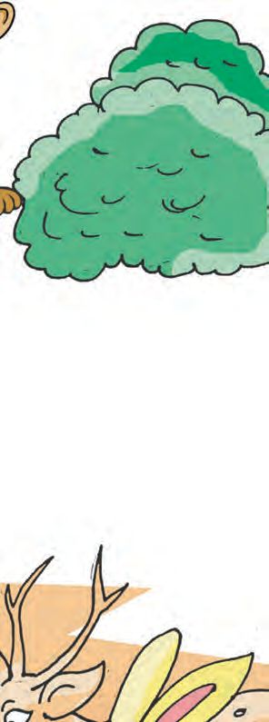
Figure fig_ch01_p029_10 (Page 29) 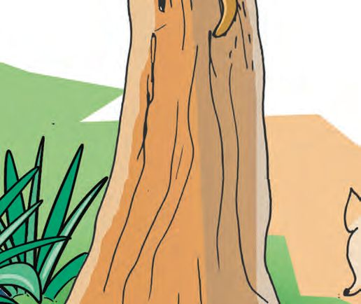
Figure fig_ch01_p029_11 (Page 29) Figure fig_ch01_p029_12 (Page 29) 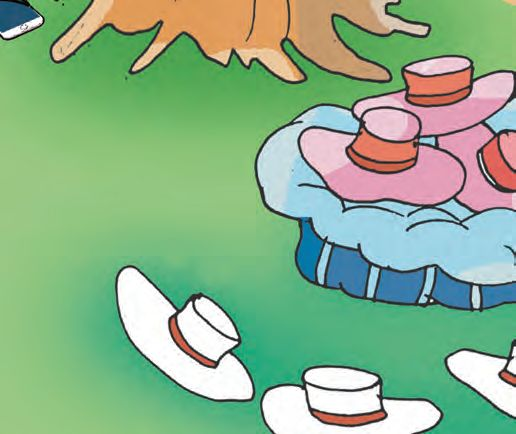
Figure fig_ch01_p029_13 (Page 29) Figure fig_ch01_p029_14 (Page 29) Figure fig_ch01_p029_15 (Page 29) Figure fig_ch01_p029_16 (Page 29) Figure fig_ch01_p029_17 (Page 29) Figure fig_ch01_p029_18 (Page 29) Figure fig_ch01_p029_19 (Page 29) Figure fig_ch01_p029_20 (Page 29) Figure fig_ch01_p029_21 (Page 29) Figure fig_ch01_p029_22 (Page 29) Figure fig_ch01_p029_23 (Page 29) Figure fig_ch01_p029_24 (Page 29) Figure fig_ch01_p029_25 (Page 29) Figure fig_ch01_p029_26 (Page 29) Figure fig_ch01_p029_27 (Page 29) Figure fig_ch01_p029_28 (Page 29) Figure fig_ch01_p029_29 (Page 29) Figure fig_ch01_p029_30 (Page 29) Figure fig_ch01_p029_31 (Page 29) Figure fig_ch01_p029_32 (Page 29) 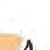
Figure fig_ch01_p029_33 (Page 29) Figure fig_ch01_p029_34 (Page 29) Figure fig_ch01_p029_35 (Page 29) Figure fig_ch01_p029_36 (Page 29)
Minnu and Kittu
opened the bag and
looked inside.
Wow!
Hats!
How many
inside?
How many
outside?
Colour
these hats.
29
Figure fig_ch01_p030_01 (Page 30) Figure fig_ch01_p030_02 (Page 30) Figure fig_ch01_p030_03 (Page 30) Figure fig_ch01_p030_04 (Page 30) 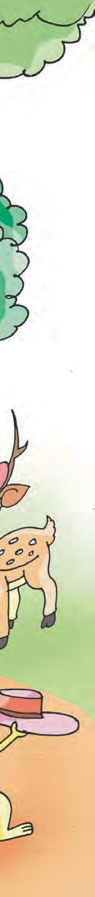
Figure fig_ch01_p030_05 (Page 30) Figure fig_ch01_p030_06 (Page 30) Figure fig_ch01_p030_07 (Page 30) Figure fig_ch01_p030_08 (Page 30) Figure fig_ch01_p030_09 (Page 30) Figure fig_ch01_p030_10 (Page 30) 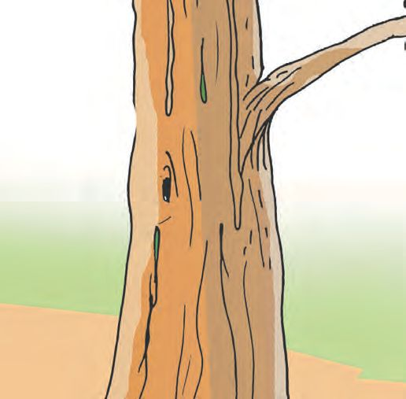
Figure fig_ch01_p030_11 (Page 30) 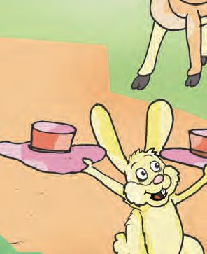
Figure fig_ch01_p030_12 (Page 30) 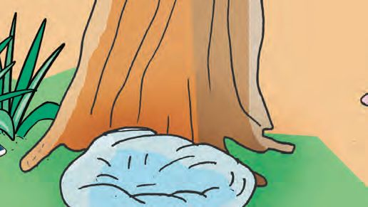
Figure fig_ch01_p030_13 (Page 30) Figure fig_ch01_p030_14 (Page 30) Figure fig_ch01_p030_15 (Page 30) Figure fig_ch01_p030_16 (Page 30) Figure fig_ch01_p030_17 (Page 30) 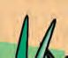
Figure fig_ch01_p030_18 (Page 30) Figure fig_ch01_p030_19 (Page 30) Figure fig_ch01_p030_20 (Page 30) Figure fig_ch01_p030_21 (Page 30) Figure fig_ch01_p030_22 (Page 30) Figure fig_ch01_p030_23 (Page 30) Figure fig_ch01_p030_24 (Page 30) Figure fig_ch01_p030_25 (Page 30) Figure fig_ch01_p030_26 (Page 30) Figure fig_ch01_p030_27 (Page 30) Figure fig_ch01_p030_28 (Page 30) Figure fig_ch01_p030_29 (Page 30) 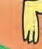
Figure fig_ch01_p030_30 (Page 30) Figure fig_ch01_p030_31 (Page 30) Figure fig_ch01_p030_32 (Page 30) Figure fig_ch01_p030_33 (Page 30) Figure fig_ch01_p030_34 (Page 30) Figure fig_ch01_p030_35 (Page 30) Figure fig_ch01_p030_36 (Page 30) Figure fig_ch01_p030_37 (Page 30) Figure fig_ch01_p030_38 (Page 30)
Kunjan squirrel and
Pinky monkey
took some hats
and climbed up.
How many hats?
Squirrel
Rabbit
Monkey
Deer
How many hats in
the bag now?
Zero means
there‛s nothing.
30
Nothing
Zero.
Figure fig_ch01_p032_01 (Page 32) Figure fig_ch01_p032_02 (Page 32) Figure fig_ch01_p032_03 (Page 32) Figure fig_ch01_p032_04 (Page 32) Figure fig_ch01_p032_05 (Page 32) Figure fig_ch01_p032_06 (Page 32) Figure fig_ch01_p032_07 (Page 32) Figure fig_ch01_p032_08 (Page 32) Figure fig_ch01_p032_09 (Page 32) Figure fig_ch01_p032_10 (Page 32) Figure fig_ch01_p032_11 (Page 32) 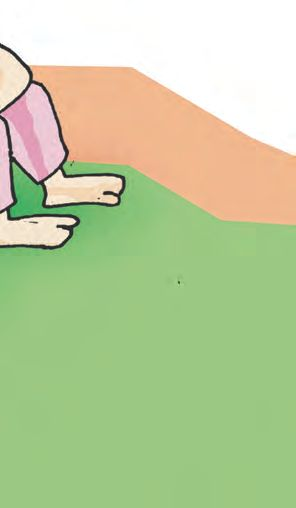
Figure fig_ch01_p032_12 (Page 32) 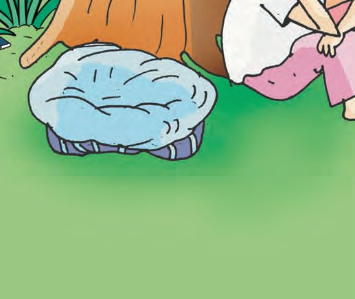
Figure fig_ch01_p032_13 (Page 32) Figure fig_ch01_p032_14 (Page 32) Figure fig_ch01_p032_15 (Page 32) Figure fig_ch01_p032_16 (Page 32) Figure fig_ch01_p032_17 (Page 32) Figure fig_ch01_p032_18 (Page 32) Figure fig_ch01_p032_19 (Page 32) Figure fig_ch01_p032_20 (Page 32) Figure fig_ch01_p032_21 (Page 32) Figure fig_ch01_p032_22 (Page 32) Figure fig_ch01_p032_23 (Page 32) Figure fig_ch01_p032_24 (Page 32) Figure fig_ch01_p032_25 (Page 32) Figure fig_ch01_p032_26 (Page 32) Figure fig_ch01_p032_27 (Page 32) Figure fig_ch01_p032_28 (Page 32) Figure fig_ch01_p032_29 (Page 32) Figure fig_ch01_p032_30 (Page 32) Figure fig_ch01_p032_31 (Page 32) Figure fig_ch01_p032_32 (Page 32) Figure fig_ch01_p032_33 (Page 32) Figure fig_ch01_p032_34 (Page 32) Figure fig_ch01_p032_35 (Page 32) Figure fig_ch01_p032_36 (Page 32) Figure fig_ch01_p032_37 (Page 32) 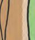
Figure fig_ch01_p032_38 (Page 32) Figure fig_ch01_p032_39 (Page 32) Figure fig_ch01_p032_40 (Page 32) Figure fig_ch01_p032_41 (Page 32) Figure fig_ch01_p032_42 (Page 32)
Ramunni Uncle, the hat seller,
came back after washing his
face at the stream.
He sat down under the tree.
Oh! My
hats!
No hats in the bag. Zero
Ramunni Uncle was very sad.
32
Figure fig_ch01_p033_01 (Page 33) Figure fig_ch01_p033_02 (Page 33) 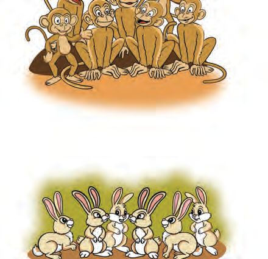
Figure fig_ch01_p033_03 (Page 33) 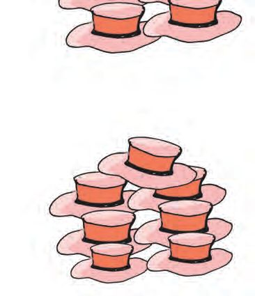
Figure fig_ch01_p033_04 (Page 33) Figure fig_ch01_p033_05 (Page 33)
Draw and join.
Each one needs one hat.
How many hats for the squirrels?
For the monkeys?
For the rabbits?
ST-467-3-MATHS(E)-1-VOL-1
Draw lines joining animals and the hats they need.
33
Figure fig_ch01_p035_01 (Page 35) Figure fig_ch01_p035_02 (Page 35) Figure fig_ch01_p035_03 (Page 35) Figure fig_ch01_p035_04 (Page 35) Figure fig_ch01_p035_05 (Page 35) Figure fig_ch01_p035_06 (Page 35) Figure fig_ch01_p035_07 (Page 35)
Minnu and Kittu continued their walk.
Hey!
Where are
you off to? Can
we come too?
Why not?
Come on!
The four of them went off together.
Who is in front of Minnu? Put a tick mark
Who is behind Minnu? Draw a smiley
35
Figure fig_ch01_p036_01 (Page 36) Figure fig_ch01_p036_02 (Page 36) Figure fig_ch01_p036_03 (Page 36) Figure fig_ch01_p036_04 (Page 36) 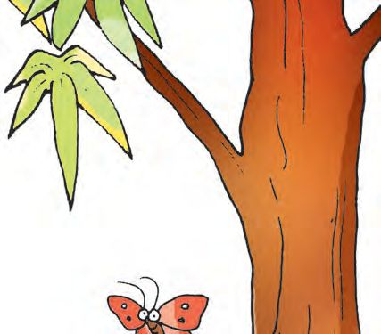
Figure fig_ch01_p036_05 (Page 36) 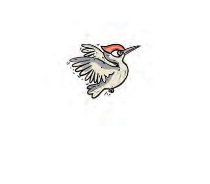
Figure fig_ch01_p036_06 (Page 36) 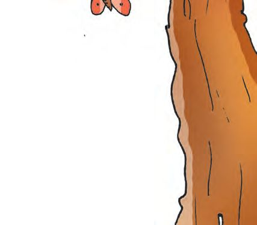
Figure fig_ch01_p036_07 (Page 36) Figure fig_ch01_p036_08 (Page 36) Figure fig_ch01_p036_09 (Page 36) 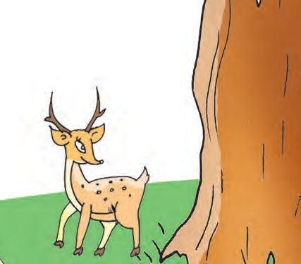
Figure fig_ch01_p036_10 (Page 36) Figure fig_ch01_p036_11 (Page 36)
All are hungry.
Look, mangoes!
Who‛ll climb
up?
I‛ll peck at
them.
Little bird did so and all
mangoes fell down.
Each of them ate one.
How many left?
Say how you
found out?
36
Figure fig_ch01_p037_01 (Page 37) Figure fig_ch01_p037_02 (Page 37) Figure fig_ch01_p037_03 (Page 37) Figure fig_ch01_p037_04 (Page 37) Figure fig_ch01_p037_05 (Page 37) Figure fig_ch01_p037_06 (Page 37) Figure fig_ch01_p037_07 (Page 37) 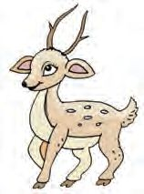
Figure fig_ch01_p037_08 (Page 37) Figure fig_ch01_p037_09 (Page 37) Figure fig_ch01_p037_10 (Page 37)
Connect...and count.
The rabbit was happy to see carrots on the wayside.
Hey!
Carrots! Let‛s
buy some.
The same
number for
me and my
brother.
I need only
the small
bunch.
The rabbit took the largest bunch.
Draw a line to connect the rabbit to this bunch.
Write the number also.
Connect the deer and squirrel to their bunches...
Write the number.
Write the number of carrots in the remaining bunches.
Did you and your friends calculate the same way?
Say how you did it.
37
Figure fig_ch01_p038_01 (Page 38) Figure fig_ch01_p038_02 (Page 38) Figure fig_ch01_p038_03 (Page 38) Figure fig_ch01_p038_04 (Page 38) Figure fig_ch01_p038_05 (Page 38) Figure fig_ch01_p038_06 (Page 38) Figure fig_ch01_p038_07 (Page 38) Figure fig_ch01_p038_08 (Page 38) 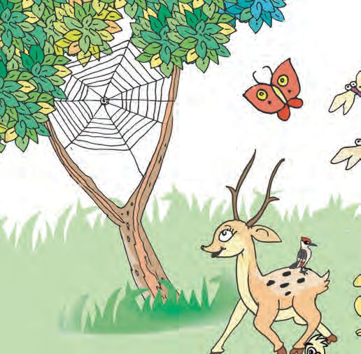
Figure fig_ch01_p038_09 (Page 38) 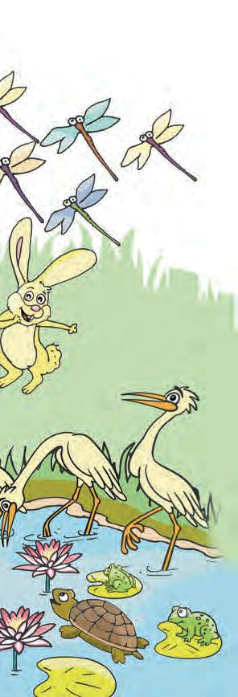
Figure fig_ch01_p038_10 (Page 38) 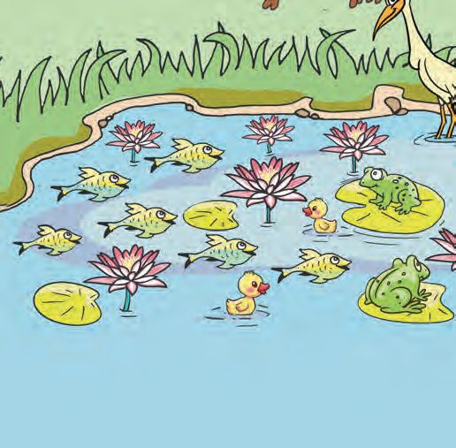
Figure fig_ch01_p038_11 (Page 38) Figure fig_ch01_p038_12 (Page 38) Figure fig_ch01_p038_13 (Page 38) Figure fig_ch01_p038_14 (Page 38) Figure fig_ch01_p038_15 (Page 38) Figure fig_ch01_p038_16 (Page 38) Figure fig_ch01_p038_17 (Page 38) Figure fig_ch01_p038_18 (Page 38) Figure fig_ch01_p038_19 (Page 38) Figure fig_ch01_p038_20 (Page 38) Figure fig_ch01_p038_21 (Page 38) Figure fig_ch01_p038_22 (Page 38) Figure fig_ch01_p038_23 (Page 38) Figure fig_ch01_p038_24 (Page 38) Figure fig_ch01_p038_25 (Page 38) Figure fig_ch01_p038_26 (Page 38) Figure fig_ch01_p038_27 (Page 38) Figure fig_ch01_p038_28 (Page 38) Figure fig_ch01_p038_29 (Page 38) Figure fig_ch01_p038_30 (Page 38) Figure fig_ch01_p038_31 (Page 38) Figure fig_ch01_p038_32 (Page 38) Figure fig_ch01_p038_33 (Page 38) Figure fig_ch01_p038_34 (Page 38) Figure fig_ch01_p038_35 (Page 38) Figure fig_ch01_p038_36 (Page 38) Figure fig_ch01_p038_37 (Page 38) Figure fig_ch01_p038_38 (Page 38) Figure fig_ch01_p038_39 (Page 38) Figure fig_ch01_p038_40 (Page 38) Figure fig_ch01_p038_41 (Page 38) Figure fig_ch01_p038_42 (Page 38) Figure fig_ch01_p038_43 (Page 38) Figure fig_ch01_p038_44 (Page 38) Figure fig_ch01_p038_45 (Page 38) Figure fig_ch01_p038_46 (Page 38) 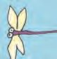
Figure fig_ch01_p038_47 (Page 38)
They walked and walked...
And reached a pond.
Wow! so
beautiful.
Let‛s stop
for a while.
What all did they see? Count and write.
Which one is the largest? Colour that box.
Write the numbers from the smallest to the largest.
38
Figure fig_ch01_p039_01 (Page 39) 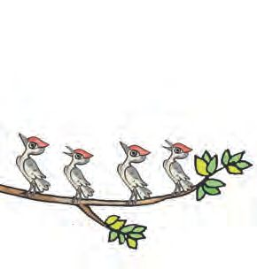
Figure fig_ch01_p039_02 (Page 39) 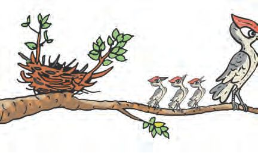
Figure fig_ch01_p039_03 (Page 39) 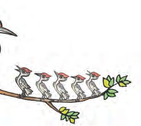
Figure fig_ch01_p039_04 (Page 39) 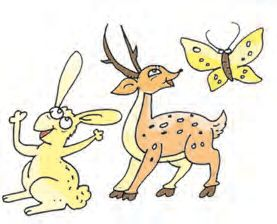
Figure fig_ch01_p039_05 (Page 39) Figure fig_ch01_p039_06 (Page 39)
Little birds
How many little birds are these? 8
Here‛s my
little one!
And three
others.
Now the little bird is
with her mother.
Now there are nine little birds.
And all 9 are happy.
Write in order.
39
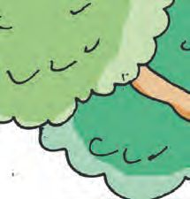
Figure fig_ch01_p040_01 (Page 40) Figure fig_ch01_p040_02 (Page 40) Figure fig_ch01_p040_03 (Page 40) Figure fig_ch01_p040_04 (Page 40) Figure fig_ch01_p040_05 (Page 40) Figure fig_ch01_p040_06 (Page 40) Figure fig_ch01_p040_07 (Page 40) Figure fig_ch01_p040_08 (Page 40) Figure fig_ch01_p040_09 (Page 40) 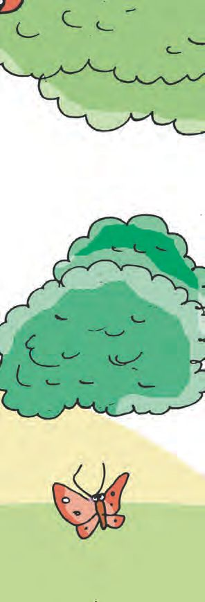
Figure fig_ch01_p040_10 (Page 40) Figure fig_ch01_p040_11 (Page 40) 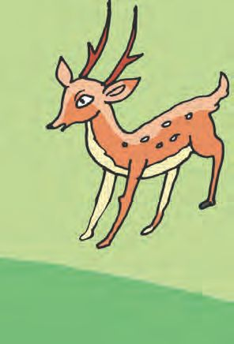
Figure fig_ch01_p040_12 (Page 40) Figure fig_ch01_p040_13 (Page 40) Figure fig_ch01_p040_14 (Page 40) Figure fig_ch01_p040_15 (Page 40) Figure fig_ch01_p040_16 (Page 40) Figure fig_ch01_p040_17 (Page 40) Figure fig_ch01_p040_18 (Page 40) Figure fig_ch01_p040_19 (Page 40) Figure fig_ch01_p040_20 (Page 40) Figure fig_ch01_p040_21 (Page 40) Figure fig_ch01_p040_22 (Page 40) Figure fig_ch01_p040_23 (Page 40) Figure fig_ch01_p040_24 (Page 40) Figure fig_ch01_p040_25 (Page 40) Figure fig_ch01_p040_26 (Page 40) Figure fig_ch01_p040_27 (Page 40) Figure fig_ch01_p040_28 (Page 40) Figure fig_ch01_p040_29 (Page 40) Figure fig_ch01_p040_30 (Page 40) Figure fig_ch01_p040_31 (Page 40) Figure fig_ch01_p040_32 (Page 40) Figure fig_ch01_p040_33 (Page 40) Figure fig_ch01_p040_34 (Page 40) Figure fig_ch01_p040_35 (Page 40) Figure fig_ch01_p040_36 (Page 40) Figure fig_ch01_p040_37 (Page 40) 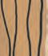
Figure fig_ch01_p040_38 (Page 40) Figure fig_ch01_p040_39 (Page 40) Figure fig_ch01_p040_40 (Page 40) Figure fig_ch01_p040_41 (Page 40) Figure fig_ch01_p040_42 (Page 40) Figure fig_ch01_p040_43 (Page 40)
Leaving the little
bird with her mother,
others returned.
Look!
Here‛s a
mobile phone.
40
Must be
the hat
seller‛s.
Figure fig_ch01_p041_01 (Page 41) Figure fig_ch01_p041_02 (Page 41) Figure fig_ch01_p041_03 (Page 41) Figure fig_ch01_p041_04 (Page 41) Figure fig_ch01_p041_05 (Page 41) Figure fig_ch01_p041_06 (Page 41) Figure fig_ch01_p041_07 (Page 41) Figure fig_ch01_p041_08 (Page 41) 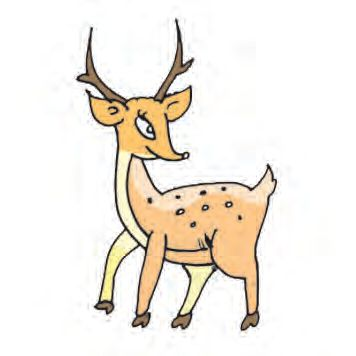
Figure fig_ch01_p041_09 (Page 41) Figure fig_ch01_p041_10 (Page 41)
Unlock the mobile phone.
Rabbit
1
2
3
4
5
6
7
8
9
x
0
Open the
number
lock.
OK
Monkey
1
2
3
4
5
6
7
8
9
x
0
OK
Squirrel
1
2
3
1
2
3
4
5
6
4
5
6
7
8
9
7
8
9
x
0
OK
x
0
OK
Deer
Parrot
They tried one by one to unlock the phone.
The numbers they pressed glowed yellow.
By that time Ramunni Uncle came back.
To unlock my phone,
you must press all
numbers from 1 to 9.
Who unlocked the phone?
Write the numbers in order.
There is another number on the phone.
What is it?
41
Figure fig_ch01_p042_01 (Page 42) 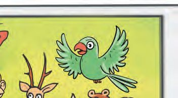
Figure fig_ch01_p042_02 (Page 42) Figure fig_ch01_p042_03 (Page 42) Figure fig_ch01_p042_04 (Page 42) Figure fig_ch01_p042_05 (Page 42)
Look at the photo.
The hat seller got his phone back.
See the photo Ramunni Uncle took.
Tick () the correct answer.
How many are there in the photo? 8
Who is on the left
of the deer?
6
7
Parrot
Monkey
Squirrel
There are 4 animals with 4 legs.
True
False
Those who can fly are more.
True
False
The butterfly and parrot
are above others.
True
False
42
Figure fig_ch01_p043_01 (Page 43) Figure fig_ch01_p043_02 (Page 43) 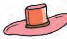
Figure fig_ch01_p043_03 (Page 43) Figure fig_ch01_p043_04 (Page 43) Figure fig_ch01_p043_05 (Page 43) Figure fig_ch01_p043_06 (Page 43) Figure fig_ch01_p043_07 (Page 43)
Let‛s give hats to the rabbits.
Which is more?
Tick () the larger.
Rabbits
Hats
One hat is given to each rabbit.
How many hats are given away?
How many are left?
43
Figure fig_ch01_p044_01 (Page 44) Figure fig_ch01_p044_02 (Page 44) Figure fig_ch01_p044_03 (Page 44)
Someone is hiding in the tree.
Join the dots from 1 to 9 in order
and colour.
Write the numbers in order.
1
4
9
One more
Colour all the flowers yellow or red. Red flowers must
be one more than the yellow flowers.
44
Figure fig_ch01_p045_01 (Page 45) Figure fig_ch01_p045_02 (Page 45) Figure fig_ch01_p045_03 (Page 45) Figure fig_ch01_p045_04 (Page 45)
Put six in a basket.
How many are inside?
How many outside?
Put five rabbits in a cage.
How many are inside?
How many outside?
Put two balls in a box.
How many are inside?
How many outside?
Put three butterflies in a circle.
How many are inside?
How many outside?
45